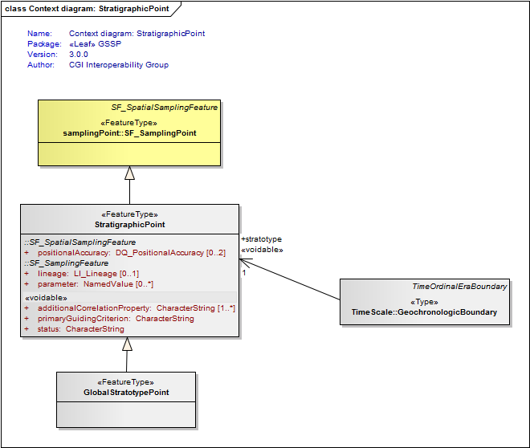
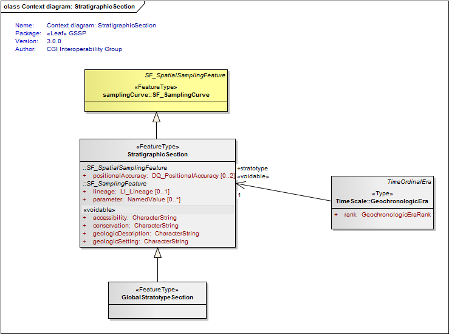
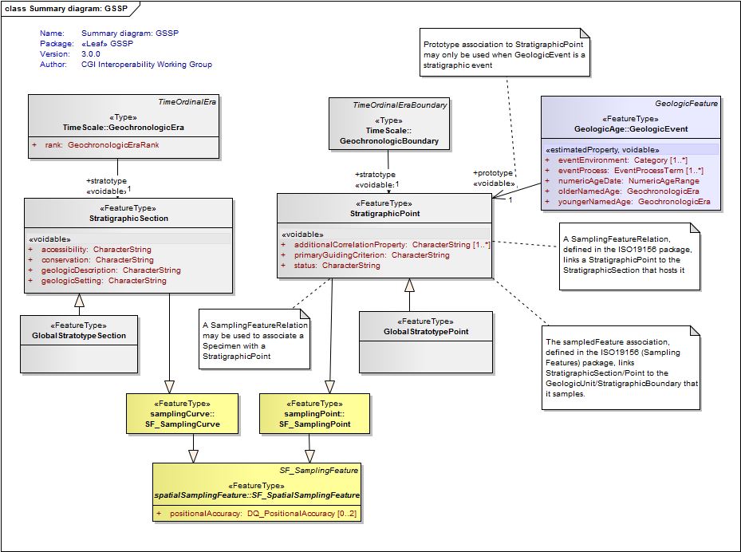
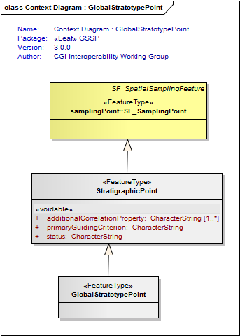

Package GeologicTimescale/GSSP
The GSSP model describes "Global Boundary Stratotype Sections and Points" as defined by the International Stratigraphy Commission.
Class Summary |
|
| <<FeatureType>> Classes | |
GlobalStratotypePoint
<<FeatureType>>
|
A type of stratigraphic point used to define a globally agreed point in geologic time |
GlobalStratotypeSection
<<FeatureType>>
|
A type of stratigraphic section used to define a globally agreed standard period of geologic time |
StratigraphicPoint
<<FeatureType>>
|
A point in the stratigraphic record used to define a geochronologic boundary or point in geologic time |
StratigraphicSection
<<FeatureType>>
|
A sampled section of the stratigraphic record used to define a period in geologic time |
Tagged Values |
||
| Tag | Value | Notes |
| xsdDocument | gssp.xsd | Description: Name of an XML Schema document to create representing the content of this package |
| xsdEncodingRule | iso19136_2007 | Values: iso19136_2007 | iso19139_2007 | iso19136_2007_INSPIRE_Extensions Default: iso19136_2007 Description: XML Schema encoding rule to apply |
UML Diagram: Context diagram: StratigraphicPoint

UML Diagram: Context diagram: StratigraphicSection

UML Diagram: Summary diagram: GSSP

UML Diagram: Context Diagram : GlobalStratotypePoint
